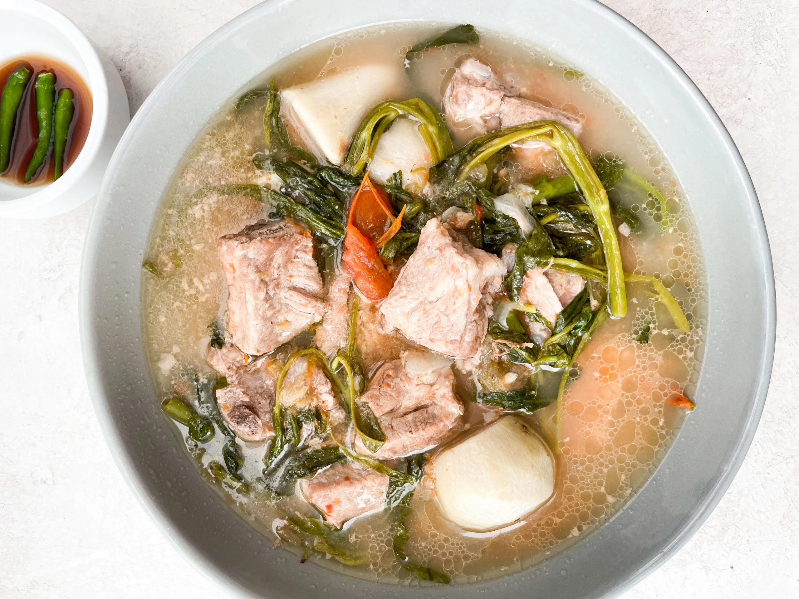

Sinigang Recipe

What is Sinigang?
Philippine adobo is a popular Filipino dish and cooking process in Philippine cuisine. In its base form, meat, seafood, or vegetables are first browned in oil, and then marinated and simmered in vinegar, salt and/or soy sauce, and garlic.Sinigang is a sour soup native to the Philippines. This recipe uses pork as the main ingredient. Other proteins and seafood can also be used. Beef, shrimp, fish are commonly used to cook sinigang. The chicken version, on the other hand, is called sinampalukang manok.
Ingredients
- Pork Belly
- Young tamarind
- Water Spinach
- String Beans
- Eggplant
- Daikon radish
- Long green pepper
How to Cook Sinigang
- Wash tamarind pods under cold, running water to remove any grit or dirt from the skins.
- Place in a saucepan with about 1 cup water and bring to a boil. Cook for about 4 to 5 minutes until soft, and the outer skins begin to burst.
- Using a fork, mash the tamarinds to release the pulp.
- Place the tamarind and liquid in a fine-mesh strainer set over a bowl. Continue to mash with a fork, returning some of the liquid into the strainer once or twice to fully extract the juice.
- Discard seeds and skins. Pour tamarind juice into the pot.